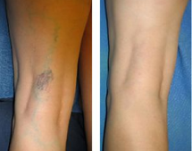
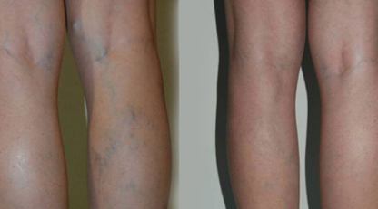
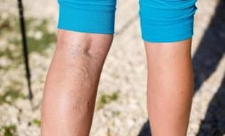

"¡Vencer las varices es algo posible! Reconocida médica farmacóloga, creó un revolucionario producto contra las varices y concedió una entrevista a los medios de comunicaciones mexicanos."
La farmacóloga Verónica Cortés es una farmacóloga de renombre internacional, ganadora de una premio internacional de 5.000.000 de dólares para apoyar un proyecto contra las varices y además es fundadora de su propia empresa de productos naturales.
Hace unos años, la Dra. Verónica Cortés tenía un aspecto muy diferente. La joven (de solo 32
años en ese momento) estaba acomplejada por sus piernas, cubiertas de venas hinchadas, sufriendo
un fuerte dolor y casi sin poder caminar. La causa de todos estos problemas eran las varices.
Al verla ahora, es imposible imaginar que una vez sufrió de varices. Ella pensaba que nunca
tendría una vida plena. Se trata de una joven sana, guapa y con éxito que no solo ha vencido su
enfermedad, sino que ha alcanzado grandes éxitos en la industria farmacéutica. Es una de las
farmacólogas más exitosas del país, ha creado su propia empresa farmacéutica de renombre,
conduce un Bentley para tomar café y se viste con marcas de lujo, pero cree que solo ha
conseguido dos cosas hasta ahora: dar a luz a un niño y descubrir un innovador producto para las
varices que ha cambiado la vida de miles de mujeres en todo el mundo.
Nuestro corresponsal se propuso conocer el nuevo y revolucionario producto. Su fórmula es
completamente natural, pero muy eficaz.
Sigue leyendo para conocer más
detalles.


Una vez que revele el secreto, reuní un equipo de científicos-médicos (y así se formó nuestra empresa farmacéutica para producir productos naturales) y creamos nuestro producto único. Ganamos un subsidio internacional de 5.000.000 de dólares para un proyecto de investigación, desarrollo y producción de un tratamiento para las varices.
María, 56 años, sus venas se han recuperado por completo, la hinchazón y el dolor han desaparecido.
Silvia, 31 años, venas totalmente restauradas, no más arañas vasculares, no más piernas pesadas.
Lucía, 48 años, completamente restauradas, no más hiperpigmentación, piel lisa, no más hinchazón ni dolor.
Úlceras varicosas son heridas que no se curan durante mucho tiempo. Uno de cada cinco pacientes desarrollará estas úlceras si no recibe tratamiento.
Consecuencias: dolor intenso, picazón insoportable, supuración, convulsiones, a menudo conducen a neoplasias malignas, una infección adicional se une a la úlcera, que puede conducir a la muerte.
Tromboflebitis es un tipo de trombosis, en la que la pared interna del vaso se inflama. La enfermedad afecta tanto a las venas superficiales como a las profundas.
Consecuencias: Tromboembolismo de la arteria pulmonar, con el flujo sanguíneo, el trombo ingresa primero a la aurícula derecha, desde allí al ventrículo derecho del corazón y desde allí a la arteria pulmonar. Entonces todo depende del tamaño del coágulo de sangre: o el paciente desarrolla insuficiencia respiratoria o se produce la muerte.
Insuficiencia venosa crónica Alteración del flujo venoso de la sangre a través de las venas profundas de las extremidades inferiores.
Consecuencias: Úlceras tróficas (heridas que no cicatrizan), infección de la extremidad, hemorragias, tromboflebitis, bloqueo por coágulos de sangre en venas profundas.
Trombosis (flebotrombosis) La trombosis venosa profunda es una condición patológica que se produce cuando se forman masas trombóticas en las venas profundas (principales) de las piernas.
Consecuencias: Oclusión completa del vaso, muerte del tejido, enfermedad postrombótica, discapacidad.
La forma para pedir el producto es la siguiente.
Hasta la fecha se han entregado cientos de miles de paquetes de . Varios miles de personas en México ya han aprovechado la oportunidad de detener las varices a un precio asequible.
Durante la entrevista, la Dra. Verónica Cortés compartió que la creación de no solo le ha permitido recuperar su salud y convertirse en una mujer exitosa, sino que también le ha ayudado a encontrar su vocación. Está tan inspirada por los resultados de sus pacientes que ha decidido poner manos a la obra y sigue trabajando en el descubrimiento de nuevos tratamientos para otras enfermedades peligrosas, como la diabetes y la hipertensión. Le deseamos mucho éxito a la Dra. Verónica Cortés, una mujer increíble que seguro que nos sorprenderá todavía.
Al pedir el producto en el sitio web oficial, se obtiene el producto original, que ha superado todas las pruebas clínicas. Puede estar seguro de que el producto es de muy alta calidad.
Llevo más de 6 años luchando contra las varices. Mi médico me recomendó que utilizara . Y ahora por fin estoy contenta, porque esas horribles venas hinchadas han desaparecido, puedo llevar ropa abierta, ir a la playa (por primera vez en 6 años), antes me daba vergüenza ponerme un traje de baño. Es un gran producto.

Pensé que las varices me perseguirían para siempre. Gracias por el artículo. Pedí dos paquetes del producto. Ya lo he probado y, por primera vez, los resultados son notables. Realmente espero que me ayude.
¡Estoy 100% seguro de que este producto te ayudará! refuerza las paredes de los vasos sanguíneos, alivia el dolor y la hinchazón. Mi experiencia con pacientes con esta enfermedad demuestra que el efecto se consigue en el 97% de los casos.
No lo vas a creer, pero yo tenía el mismo problema, mis pies se hinchaban constantemente, tenía arañas vasculares, estaba desesperada, pero gracias a Dios encontré , es un producto maravilloso, ¡lo recomiendo a todo el mundo!
Lo digo por experiencia propia: ¡los resultados son incomparables! Ambas venas han vuelto a la normalidad. A decir verdad, estoy muy satisfecha. Pida , ¡no lo dude!

Hace poco me diagnosticaron varices y eso me hizo darme cuenta de la importancia de cuidar mi salud. Así que decidí probar este producto, ¡y valió la pena! Me siento más saludable, por fin dejan de dolerme los pies, incluso puedo llevar zapatos ajustados sabiendo que mis pies no se hincharán por la noche. Recomiendo el producto a todo el mundo, ¡estoy muy contenta! ¡Tienen que probarlo!
Gracias por la recomendación, Naomi. Yo también tengo un problema de varices en mi familia. He pedido para toda la familia y voy a probar .
Es estupendo que la gente recomiende basándose en su propia experiencia.
Encontré este remedio en internet y lo compré. Mis piernas daban miedo. Hacía años que no me ponía ropa abierta. Solo pantalones anchos y calcetines oscuros, para que nadie pudiera ver mi cuerpo desfigurado. Incluso me vestía así en casa. Gracias a este producto, he podido devolver a mis piernas su antigua belleza, están rectas y lisas, ¡no sobresalen las venas! Gran producto y precio razonable. Lo recomiendo.

¿Por qué mi doctor no habla de esto? Gracias por el artículo y por sugerir una solución a mi viejo problema.
Es posible que algunos médicos ni siquiera conozcan este producto. Hay especialistas que siguen ciertos protocolos de tratamiento año tras año y no conocen los nuevos productos realmente eficaces. La próxima vez que visites a tu médico, puedes preguntarle por este producto y seguro que él también te lo recomendará.
Lo pedí para mi hermana hace un tiempo. No tenía ni idea de lo feliz que sería. Puedo decir que ha cambiado su vida.
También lo pedí para mis seres queridos. Mi madre tiene varices y lleva 3 meses utilizando , ahora tiene más energía y fuerza, ya que los dolores ya no le molestan. ¡Este es un gran producto!
Me encanta este producto. Realmente funciona y pienso seguir usándolo. Mis venas por fin han vuelto a la normalidad.
¡Adoro ! Desde hace cuatro meses, mis venas son completamente normales. Solo uso y he eliminado todos los productos que me ha recetado mi médico. El ahorro es considerable. Y me siento muy bien
Tras 9 días de uso de este medicamento, comprobé que la hinchazón de mis piernas había bajado y el dolor se había reducido considerablemente. Seguiré con esta terapia y evaluaré los resultados a largo plazo.
Leí los comentarios y supe que tenía que hacer un pedido.
Llevo 3 semanas utilizando . Durante este tiempo, he sentido una inusual ligereza en las piernas. Antes, mis piernas siempre estaban hinchadas y me dolían. Además, no se veían muy bien debido a las varices, ahora las venas abultadas se están reduciendo ante mis ojos. El producto es excelente.
Melissa, como médico, te recomiendo que sigas el curso de . Solo obtendrá un efecto realmente visible y duradero si lo utiliza de forma sistemática. Es apto para todas las edades, así que no se preocupe, puede utilizarlo con seguridad sin temor a dañar su salud.
Muchas gracias por su respuesta. Seguiré el tratamiento tal y como recomienda el fabricante. Me has inspirado.
Casi todos los miembros de mi familia tienen varices. Solo tengo 18 años y tengo mucho miedo de que me toque a mí también. Hago ejercicio y cuido mi dieta, pero todavía tengo mucho miedo. ¿Saben si puedo utilizar como método preventivo?
Paulina, puedes utilizar como medida preventiva sin miedo. Su composición natural no dañará tu cuerpo. Especialmente si tiene antecedentes familiares de varices, es mejor protegerse.
En la práctica, es muy frecuente que las varices sean hereditarias. Pero esto no es algo 100% probable. Una dieta sana y la práctica de deporte te ayudarán sin duda a mantenerte sana. Pero no te olvides de los exámenes y las pruebas.
Gracias por los consejos. He pedido y estoy esperando la entrega. Más vale prevenir que lamentar
Yo no tengo problemas con mis venas, pero mi madre no sabe qué hacer con ellas, ya está pensando en que le quiten la vena por completo. He pedido este producto para ella, ¡espero que le ayude!
Hiciste muy bien en pedir primero e intentar una terapia conservadora. La cirugía es bastante eficaz, pero recuerda que los problemas de las venas pueden volver a aparecer. La cirugía no es garantía de protección total contra las varices. Estoy seguro de que después de un curso de , su madre se olvidará de la operación
Hace poco vi un programa sobre las varices en el que hablaban de este producto. También decía que habían creado el mejor producto para las varices del mundo. Muy interesante. Tengo que probarlo y comprobarlo.
Sí, yo también vi ese programa. ¡Resulta que muchos famosos utilizan ! Y yo que pensaba que eran tan perfectas, pero no, las estrellas también tienen el secreto de la belleza de las piernas: ¡!
Lo pedí por internet y me lo entregaron a tiempo. Llevo una semana usándolo y mis venas están mejorando. Se acabó la fatiga, la pesadez y el dolor en las piernas. Además, es estupendo que sea natural y no perjudique la salud.
me devolvió la vida normal. Incluso tengo un novio. Todo gracias a la confianza en mí misma y a la belleza de mis piernas, todos los complejos con acaban de disolverse, ¡así como los feos asteriscos y venas de mis piernas!